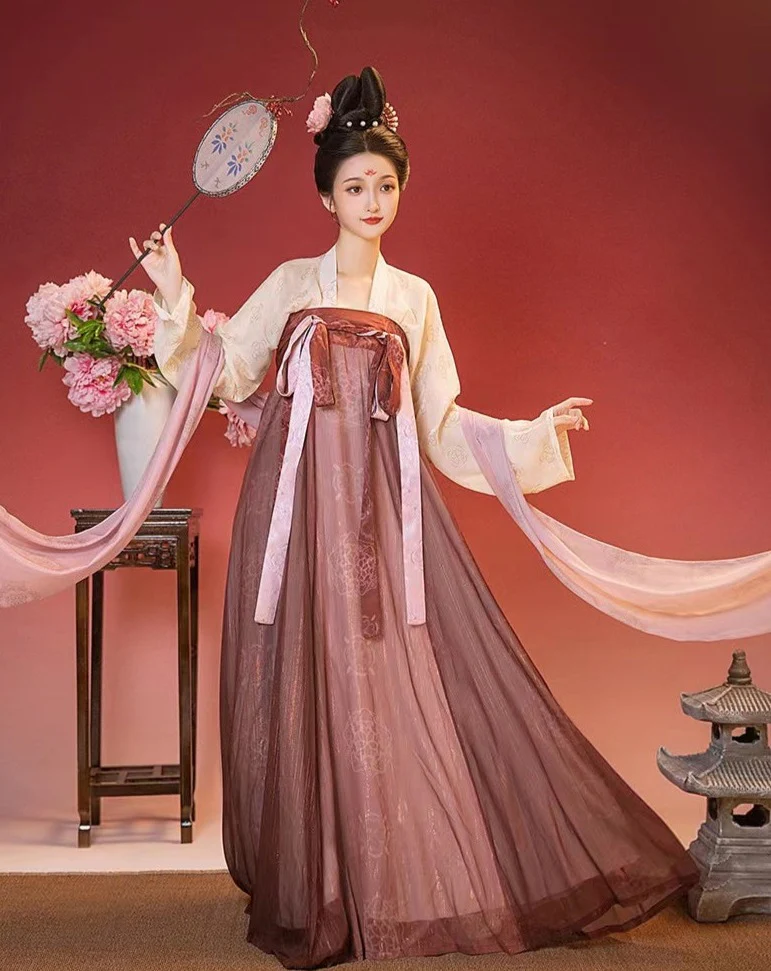
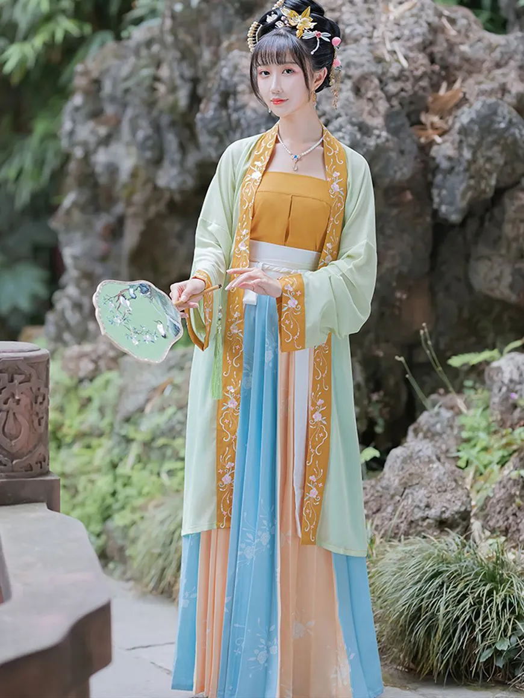
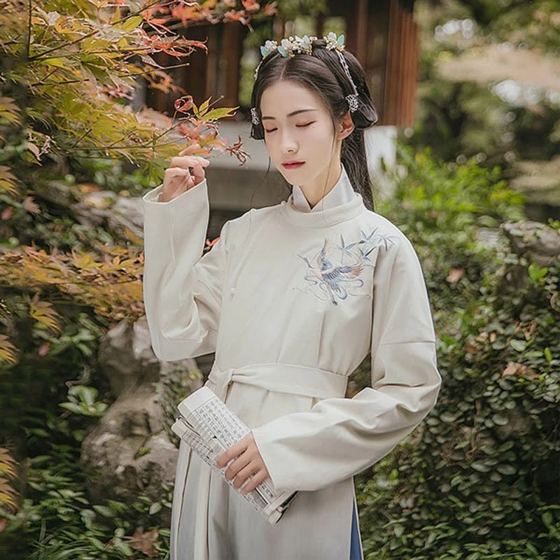
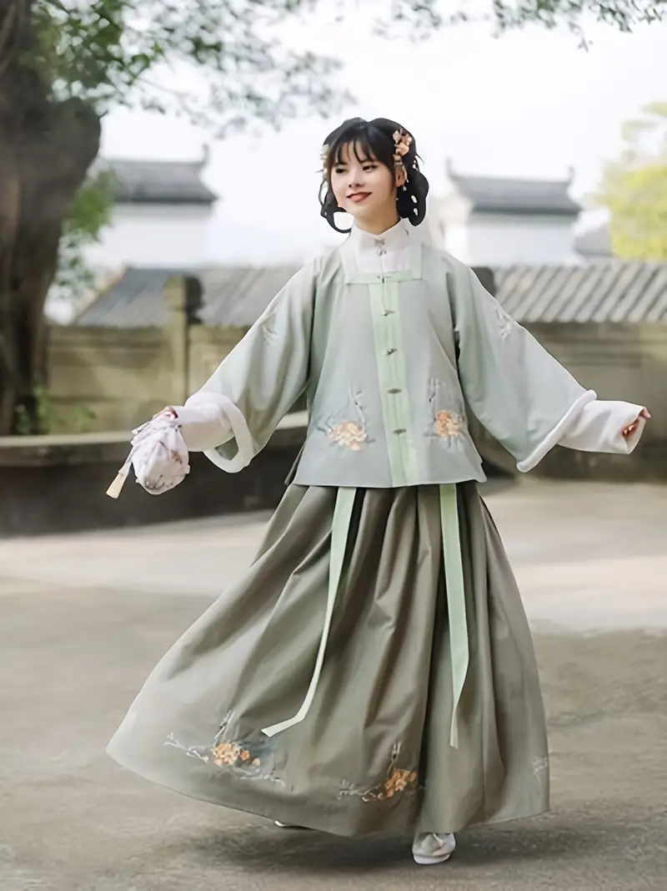
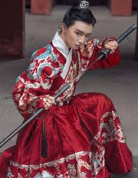
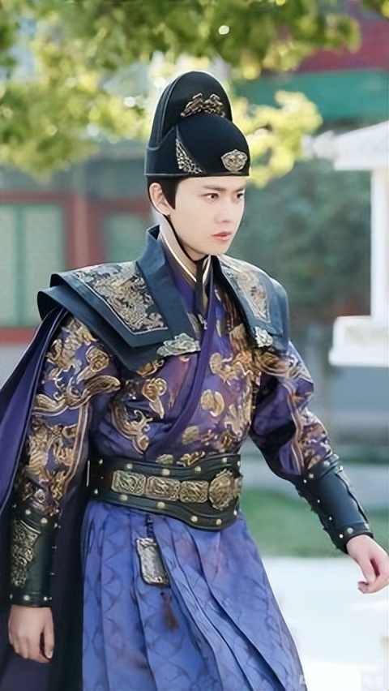
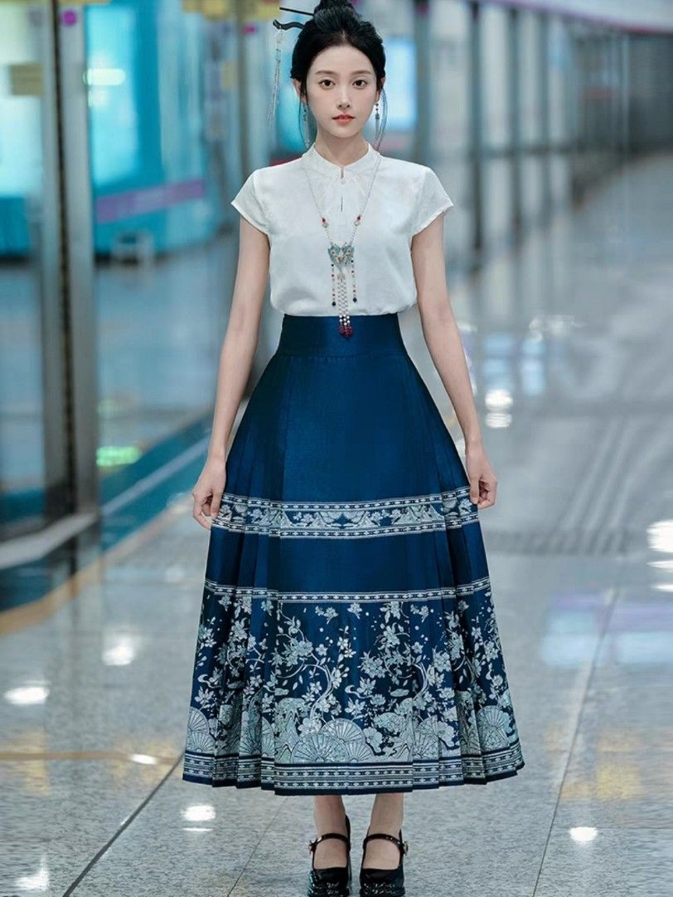
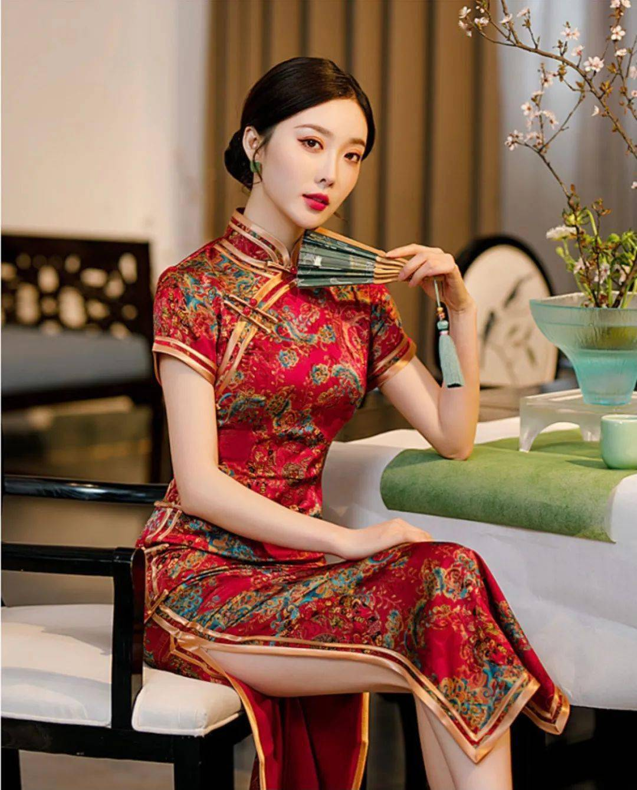
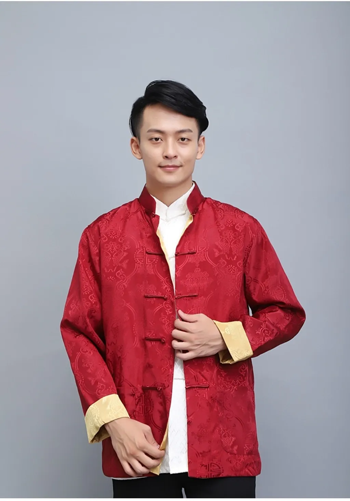

Qixiong Ruqun
Beizi
Qiyao Ruqun
Tanling Ruqun
Yuanling Pao
Aoqun

Panling Pao
Yesa
Flying Fish Suit
Horse Face Skirt
Cheongsam
Samfu
Hanfu are the traditional styles of clothing worn by the Han Chinese since the 2nd millenium BCE.There are several representative styles of hanfu, such as the ruqun (an upper-body garment with a long outer skirt), the aoqun (an upper-body garment with a long underskirt), the beizi and the shenyi,and the shanku (an upper-body garment with ku trousers).
Traditionally, hanfu consists of a paofu robe, or a ru jacket worn as the upper garment with a qun skirt commonly worn as the lower garment. In addition to clothing, hanfu also includes several forms of accessories, such as headwear, footwear, belts, jewellery, yupei and handheld fans.Nowadays, the hanfu is gaining recognition as the traditional clothing of the Han ethnic group, and has experienced a growing fashion revival among young Han Chinese people in China and in the overseas Chinese diaspora.
After the Han dynasty, hanfu developed into a variety of styles using fabrics that encompassed a number of complex textile production techniques, particularly those used to produce silk.Hanfu has influenced the traditional clothing of many neighbouring cultures, including the Korean Hanbok,the Japanese kimono (wafuku),the Ryukyuan ryusou and the Vietnamese áo giao lĩnh (việt phục).To a certain extent, hanfu has also influenced some elements in Western fashion, especially those influenced by Chinoiserie fashion, due to the popularity of Chinoiserie since the 17th century in Europe and in the United States.Silk remains a core element of Hanfu and Chinese traditional clothing.
|  |  |
|
|
 |  |
|---|---|---|---|---|---|
|
Qixiong Ruqun |
Beizi |
Qiyao Ruqun |
Tanling Ruqun |
Yuanling Pao |
Aoqun |
|
|
 |  |  |  |  |
|
Panling Pao |
Yesa |
Flying Fish Suit |
Horse Face Skirt |
Cheongsam |
Samfu |